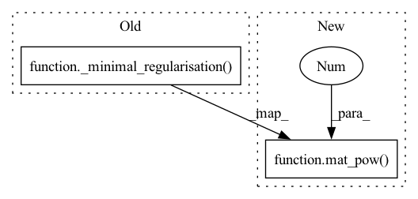

Pattern ID :40595
Before Change
eigen_views = [
view
@ torch.inverse(_minimal_regularisation( view.T @ view, self.eps) )
@ view.T
for view in views
]After Change
eigen_views = [
view
@ mat_pow( view.T @ view, -1 , self.eps)
@ view.T
for view in views
]
In pattern: SUPERPATTERN
Frequency: 3
Non-data size: 2
Instances Fragment ID: 114823417
Project Name: jameschapman19/cca_zoo
Commit Name: 1d44b536e453cb07222dddfc4f2366eaeac837ba
Time: 2021-12-07
Author: james.chapman.19@ucl.ac.uk
File Name: cca_zoo/deepmodels/objectives.py
M Class Name: GCCA
N Class Name: GCCA
M Method Name: loss(1)
N Method Name: loss(1)
M Parent Class:
N Parent Class:
M File Name: cca_zoo/deepmodels/objectives.py
N File Name: cca_zoo/deepmodels/objectives.py
M Start Line: 142
M End Line: 142
N Start Line: 109
N End Line: 109
Before Change
) * H2bar.T @ H2bar + self.r * torch.eye(o2, device=H2.device)
SigmaHat11RootInv = torch.linalg.inv(
MatrixSquareRoot.apply(_minimal_regularisation( SigmaHat11, self.eps) )
)
SigmaHat22RootInv = torch.linalg.inv(
MatrixSquareRoot.apply(_minimal_regularisation(SigmaHat22, self.eps))After Change
1.0 / (n - 1)
) * H2bar.T @ H2bar + self.r * torch.eye(o2, device=H2.device)
SigmaHat11RootInv = mat_pow( SigmaHat11, -0.5 , self.eps)
SigmaHat22RootInv = mat_pow(SigmaHat22, -0.5, self.eps)
Tval = SigmaHat11RootInv @ SigmaHat12 @ SigmaHat22RootInv
trace_TT = Tval.T @ Tval Fragment ID: 114823418
Project Name: jameschapman19/cca_zoo
Commit Name: 1d44b536e453cb07222dddfc4f2366eaeac837ba
Time: 2021-12-07
Author: james.chapman.19@ucl.ac.uk
File Name: cca_zoo/deepmodels/objectives.py
M Class Name: CCA
N Class Name: CCA
M Method Name: loss(3)
N Method Name: loss(3)
M Parent Class:
N Parent Class:
M File Name: cca_zoo/deepmodels/objectives.py
N File Name: cca_zoo/deepmodels/objectives.py
M Start Line: 201
M End Line: 213
N Start Line: 168
N End Line: 176
Before Change
whitened_z = [
z_
@ torch.linalg.inv(
MatrixSquareRoot.apply(_minimal_regularisation( cov, self.eps) )
)
for z_, cov in zip(z, covs)
]After Change
+ self.r * torch.eye(z_.size(1), device=z_.device)
for z_ in z
]
whitened_z = [z_ @ mat_pow( cov, -0.5 , self.eps) for z_, cov in zip(z, covs)]
// The idea here is to form a matrix with M dimensions one for each view where at index
// M[p_i,p_j,p_k...] we have the sum over n samples of the product of the pth feature of the
// ith, jth, kth view etc. Fragment ID: 114823419
Project Name: jameschapman19/cca_zoo
Commit Name: 1d44b536e453cb07222dddfc4f2366eaeac837ba
Time: 2021-12-07
Author: james.chapman.19@ucl.ac.uk
File Name: cca_zoo/deepmodels/objectives.py
M Class Name: TCCA
N Class Name: TCCA
M Method Name: loss(1)
N Method Name: loss(1)
M Parent Class:
N Parent Class:
M File Name: cca_zoo/deepmodels/objectives.py
N File Name: cca_zoo/deepmodels/objectives.py
M Start Line: 255
M End Line: 258
N Start Line: 216
N End Line: 216